主任操作手冊
主任負責兩個關卡：委外或報廢的核示，以及修好後的結案簽核。另外管理帳號、樓層區域與報修類別，並可看查詢與統計。總務請假時，主任也能接單處理，做法和總務手冊相同。
一、快速指引
每個功能的步驟，熟悉後看這裡就夠了。點功能名稱可跳到完整說明。
| 1. 第一次使用：確認身分 | 掃報修 QR Code → 輸入姓名、手機 → 按 確認 |
| 2. 認識畫面 | 分頁：待我簽、進行中、查詢、統計、設定，右上 ＋報修 |
| 3. 委外或報廢核示 | 待我簽 → 點申請委外或報廢的單 → 看主任簽核區 → 核准 或 退回 |
| 4. 結案簽核 | 待我簽 → 點結案簽核的單 → 看紀錄與照片 → 核准結案 或 退回 |
| 5. 看進行中的單 | 進行中 → 選樓層區域 |
| 6. 看統計 | 統計 → 選期間 → 點排行項目可查紀錄 |
| 7. 查詢以前的紀錄 | 查詢 → 輸入關鍵字 → 查詢 |
| 8. 新增帳號 | 設定 → ＋新增 → 填姓名、手機、角色 → 儲存 |
| 9. 修改、停用帳號與重設驗證 | 設定 → 點一列 → 改資料或取消 啟用 → 儲存；換手機按 重設驗證 |
| 10. 批次匯入帳號 | 開報修系統試算表 → Apps Script 執行 importUsers → 貼上姓名、手機、角色 → 再執行一次 |
| 11. 設定樓層區域與報修類別 | 設定 → 新增、改名、↑↓ 排序、✕ 刪除 → 儲存 |
| 12. 換人使用 | 畫面最下方 換人使用 → 按 確定 |
二、完整說明
圖中橘色框是要按或要填的地方。圖裡的人名和單子都是示範資料。
1第一次使用：確認身分
每支手機或每台電腦，第一次打開系統時要確認一次身分。確認過後這台裝置就會記住你，之後打開直接使用，不用再輸入。
- 用手機掃張貼的報修 QR Code，或在瀏覽器打開 https://chienxinyuannh.github.io/repair/。
- 輸入姓名和手機號碼，按 確認。手機號碼有沒有加「-」都可以。
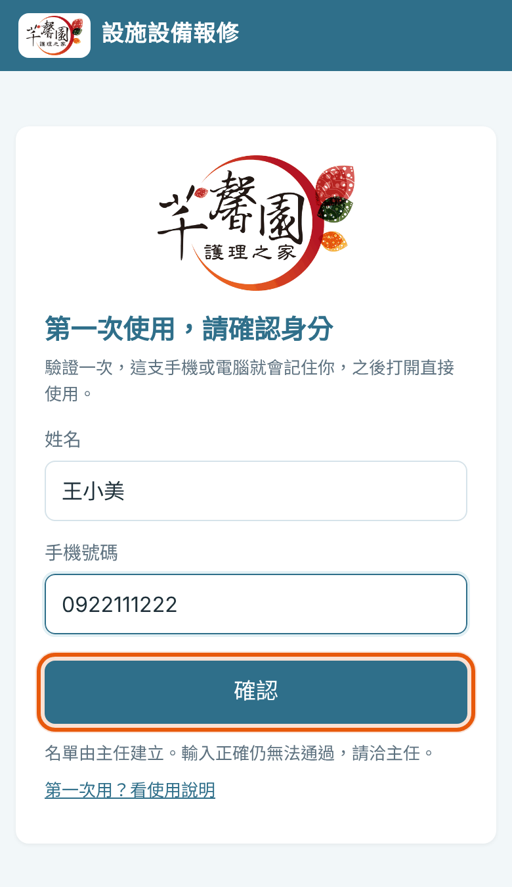
輸入姓名和手機後按「確認」 - 畫面出現分頁就完成了。
小技巧把網頁加到手機主畫面，下次一點就開。iPhone：Safari 下方「分享」>「加入主畫面」。Android：Chrome 右上「⋮」>「加到主畫面」。
注意輸入正確卻無法通過，通常是名單上沒有你，或登記的手機號碼不同，請找主任確認。
回快速指引2認識畫面
- 「待我簽」有單時數字是紅色的。簽完後會自動切到「進行中」。
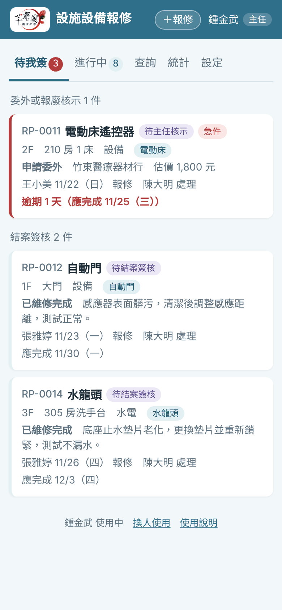
主任的分頁與待我簽
| 分頁 | 內容 |
|---|---|
| 待我簽 | 委外或報廢核示、結案簽核 |
| 進行中 | 全院還沒結束的單 |
| 查詢 | 查全部歷史紀錄 |
| 統計 | 件數、逾期、費用、排行 |
| 設定 | 帳號、樓層區域、報修類別 |
3委外或報廢核示
- 在 待我簽 點「申請委外」或「申請報廢」的單，往下捲到主任簽核，看廠商、估價和總務的評估說明。
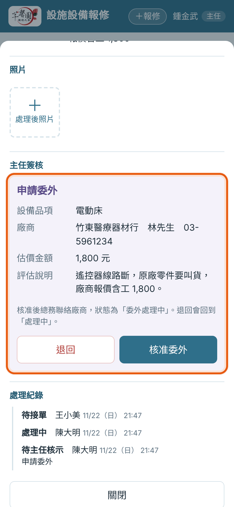
主任簽核區 - 同意就按 核准委外（或 核准報廢），意見可以不寫，再按一次確認。
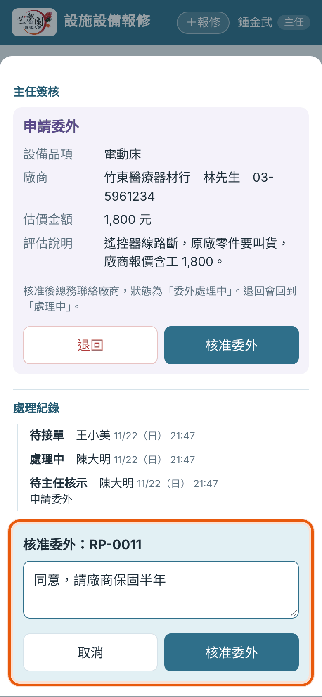
核准，意見選填 - 不同意就按 退回，一定要寫意見，告訴總務要補什麼或改什麼。
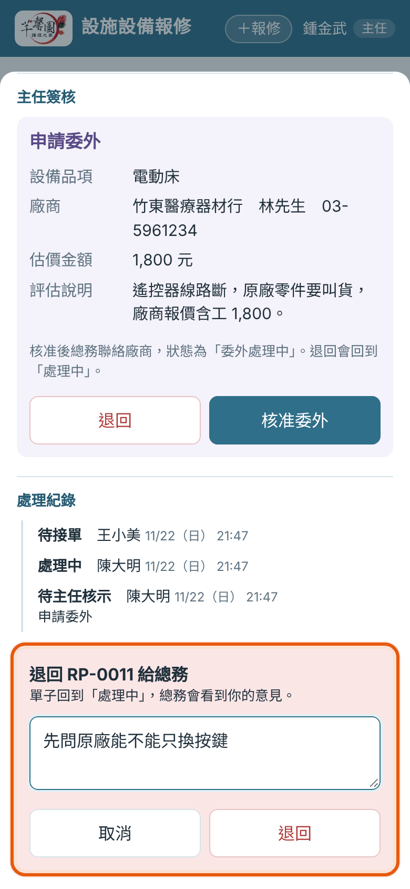
退回，意見必填
| 結果 | 單子會變成 |
|---|---|
| 核准委外 | 委外處理中，總務聯絡廠商 |
| 核准報廢 | 待結案簽核，你再簽一次就結案 |
| 退回 | 處理中，總務會看到你的意見 |
4結案簽核
- 點開單子，主任簽核區會整理好維修紀錄、費用、處理後照片張數和完工時間。完工超過應完成日會特別標出來。確認沒問題按 核准結案；要補資料就 退回 並寫意見。
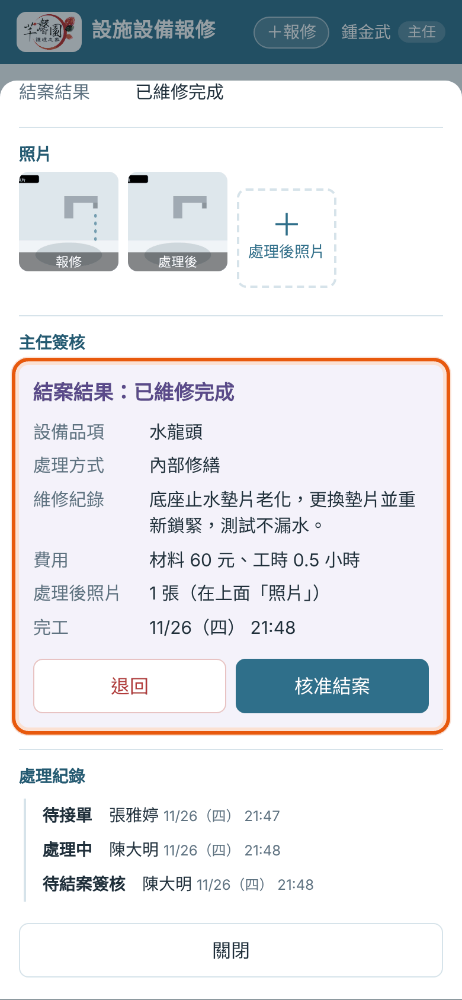
結案簽核區
小技巧處理後照片在上方的「照片」區，點一下可以放大。
注意結案結果是「報廢」的單，核准後狀態是「報廢」；其餘是「已結案」。
回快速指引5看進行中的單
- 列出全院還沒結束的單，逾期和立即處理排最前面。點開可以看處理到哪裡。
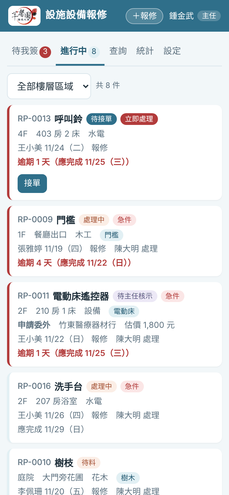
進行中
6看統計
- 按 統計 選期間。用電腦看比較清楚。點「最常損壞的設備品項」或「樓層區域」的一項，會跳到查詢列出相關紀錄。
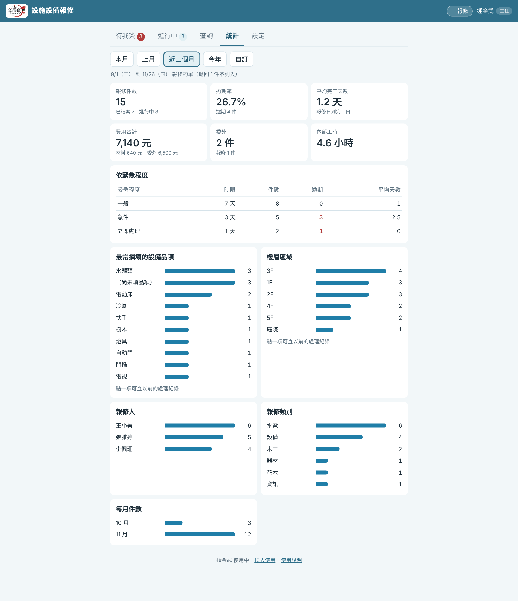
統計（電腦畫面）
各數字怎麼算
| 項目 | 算法 |
|---|---|
| 報修件數 | 期間內報修的單，退回的不算 |
| 逾期率 | 完工日超過應完成日的件數 ÷ 報修件數。還沒完工的用今天算。完工日是總務送結案的時間，不含等你簽核的時間 |
| 平均完工天數 | 報修日到完工日的平均天數，只算已完工的 |
| 費用合計 | 材料費加委外費用 |
| 委外、報廢 | 處理方式是委外修繕、結果是報廢的件數 |
| 內部工時 | 總務填的工時加總 |
| 排行 | 最常損壞的設備品項、樓層區域、報修人、報修類別、每月件數 |
注意「（尚未填品項）」是總務還沒填設備品項的單，多半是還沒處理的。
回快速指引7查詢以前的紀錄
- 和總務的查詢一樣，可查單號、品項、地點、維修紀錄、廠商、報修人，多個關鍵字用空白隔開。

查詢畫面
8新增帳號
- 按 設定，帳號表格右上按 ＋新增。表格的「驗證」欄顯示每個人最後確認身分的日期，「尚未」表示還沒用過。
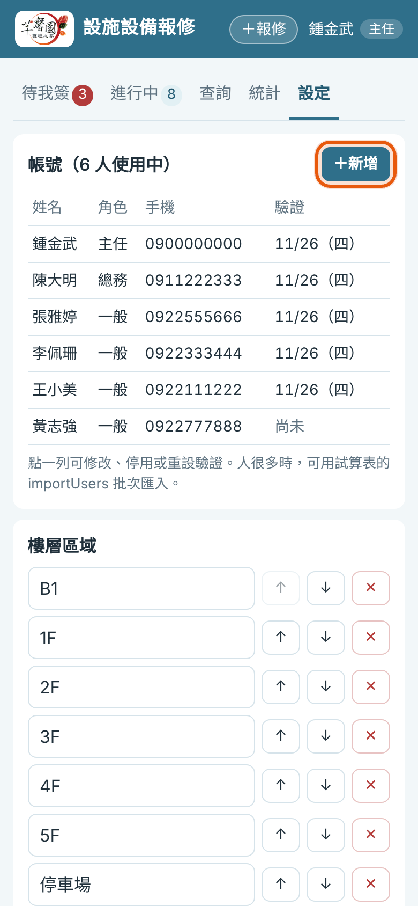
帳號表格 - 填姓名、手機，選角色，按 儲存。同仁第一次打開系統，輸入這裡的姓名和手機就能用。
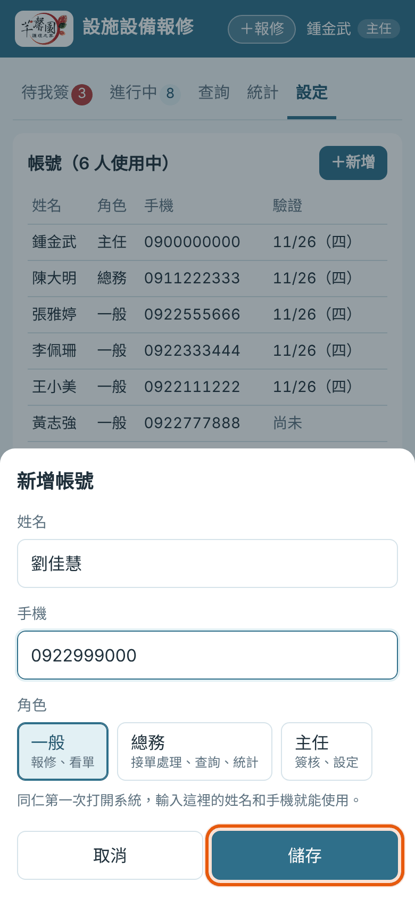
新增帳號
| 角色 | 能做的事 |
|---|---|
| 一般 | 報修、看單、補照片、撤回自己的單 |
| 總務 | 接單、處理、送核示與結案、查詢、統計 |
| 主任 | 核示、結案簽核、設定，也能做總務的事 |
注意姓名要和同仁自己輸入的一樣（空白不影響），手機號碼不能和別人重複。
回快速指引9修改、停用帳號與重設驗證
- 點表格中的一個人，可以改姓名、手機、角色。離職就取消勾選「啟用」再儲存，他所有的裝置立刻不能用。
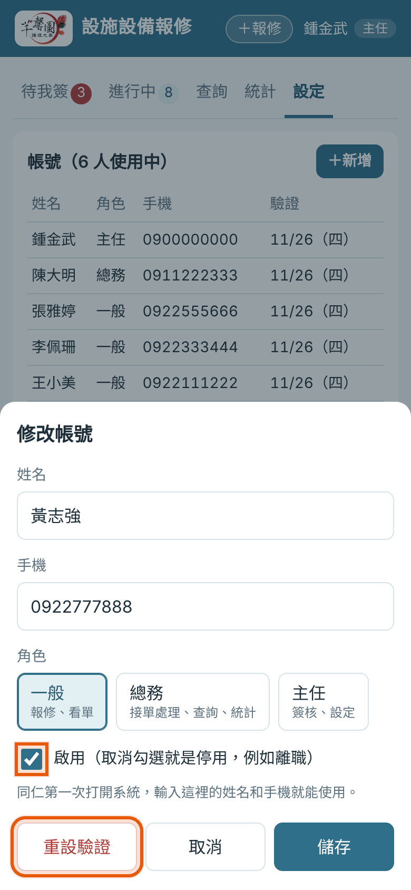
修改帳號
| 情況 | 怎麼做 |
|---|---|
| 手機遺失、手機給了別人 | 按 `重設驗證`，再按一次確認。這個人所有裝置都要重新確認身分 |
| 換新手機 | 不用做什麼，同仁用新手機確認身分就好 |
| 離職 | 取消「啟用」後儲存。紀錄會保留 |
| 調職到總務 | 角色改成「總務」 |
注意不能停用自己，也不能改自己的角色。
回快速指引10批次匯入帳號
一次要建很多人（例如剛上線）時，用試算表匯入比較快。
- 用 chienxinyuan.nh@gmail.com 打開試算表「芊馨園報修系統」，選單「擴充功能 > Apps Script」。
- 上方函式選單選 importUsers，按「執行」。試算表會多一個「匯入帳號」分頁。
- 在「匯入帳號」分頁從第 2 列開始貼上：A 欄姓名、B 欄手機、C 欄角色（空白就是一般，總務填「總務」）。
- 回 Apps Script 再執行一次 importUsers，D 欄會寫結果：已建立、已有帳號略過，或錯誤原因。完成後可以把分頁刪掉。
11設定樓層區域與報修類別
- 在 設定 往下捲。直接改框裡的字就是改名，↑↓ 調整順序，✕ 刪除，最下面可以新增。改完按 儲存樓層區域（或 儲存報修類別），按 復原 可以放棄修改。
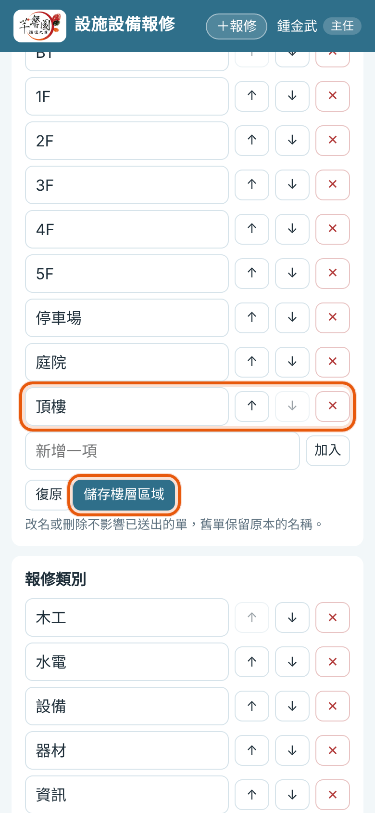
樓層區域設定
注意改名或刪除不會影響已經送出的單，舊單保留原本的名稱。統計時新舊名稱會分開算。
回快速指引12換人使用
公用電腦要交給別人用，或借別人的手機報修後要還回去時使用。按了之後這台裝置會忘記你，下次要重新確認身分。
- 捲到畫面最下方，按 換人使用。旁邊的 使用說明 會打開這份手冊。

畫面最下方的「換人使用」與「使用說明」 - 看清楚提示後按 確定。

確認要讓這台裝置忘記你
三、附錄
狀態怎麼走
待接單接單處理中送結案待結案簽核主任核准已結案
處理中送委外核示待主任核示核准委外處理中送結案待結案簽核
處理中送報廢核示待主任核示核准待結案簽核主任核准報廢
處理中等零件待料料到了處理中
主任退回（核示或結案）一律回到「處理中」。待接單、處理中、待料的單，總務可以退回。
單子的狀態
| 狀態 | 意思 |
|---|---|
| 待接單 | 剛送出，總務還沒接 |
| 處理中 | 總務已接單，正在處理 |
| 待料 | 等零件或工具 |
| 待主任核示 | 要請廠商修或要報廢，等主任同意 |
| 委外處理中 | 主任已同意，由廠商處理 |
| 待結案簽核 | 已經修好（或確定報廢），等主任最後確認 |
| 已結案 | 全部完成 |
| 報廢 | 東西報廢，不修了 |
| 退回 | 不處理，例如重複報修、報修人撤回，原因會寫在單上 |
超過應完成日還沒修好的單，會標紅色的「逾期」。
系統維護
| 項目 | 說明 |
|---|---|
| 資料在哪裡 | chienxinyuan.nh@gmail.com 雲端硬碟的試算表「芊馨園報修系統」，共 7 個分頁：帳號、登入、報修單、照片、狀態紀錄、選項、紀錄 |
| 照片在哪裡 | 同一個雲端硬碟的資料夾「芊馨園報修照片」，每張單一個子資料夾，不公開 |
| 誰做了什麼 | 試算表「紀錄」分頁記下每個操作；「狀態紀錄」記下每次狀態變更 |
| 上線前清測試資料 | Apps Script 執行 clearTestData：刪掉所有報修單與 3 個測試帳號，正式帳號保留。雲端硬碟裡的測試照片要手動刪 |
| 備份 | 試算表「檔案 > 下載 > Microsoft Excel」，建議每月一次 |
| 改了後端程式 | Apps Script「部署 > 管理部署作業 > 編輯 > 版本：新版本」，網址不變 |
| 改了網頁 | GitHub（chienxinyuannh）的 repair，重新上傳有改的檔案 |
請不要手動改試算表的單號、登入版本、照片資料夾欄位，以免系統對不上。
常見問題
- 同仁說驗證不過？
- 在「設定」看名單上的姓名和手機是否正確、帳號是否啟用。
- 我忘了簽會怎樣？
- 單子會一直留在「待我簽」。逾期是算到總務完工為止，不會因為等你簽而變逾期，但報修人要等到你簽完才會看到「已結案」。
- 簽錯了可以收回嗎？
- 不行。核准錯了可以請總務在單上備註；如果真的要重來，請同仁重報一張。
- 總務請假時誰處理？
- 主任可以接單處理，做法請看總務手冊。
- 想看某人或某樓層的所有報修？
- 在「查詢」輸入姓名或樓層區域，例如「3F」。